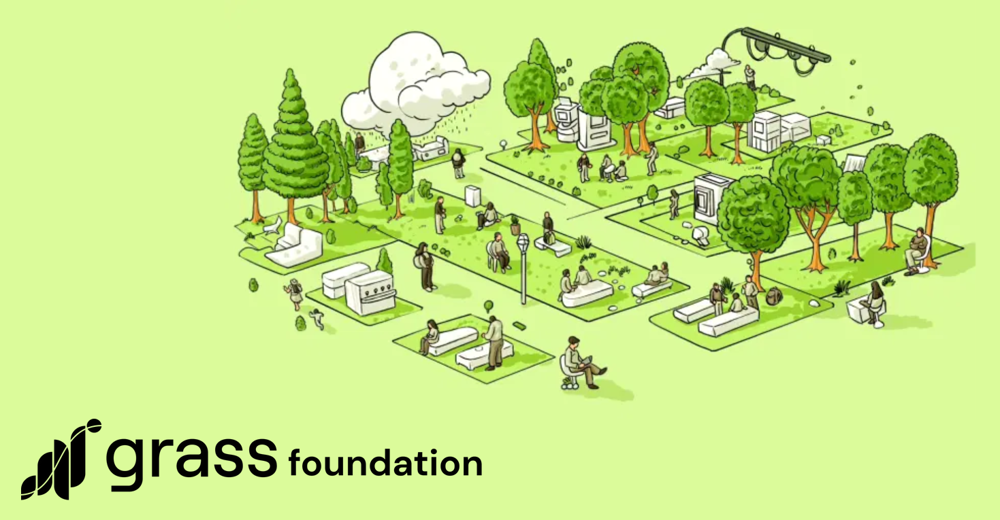
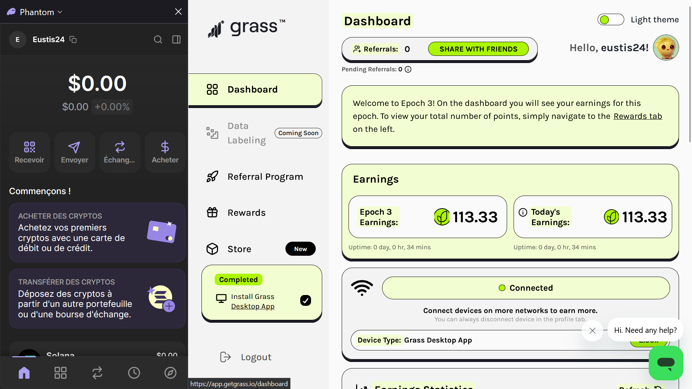
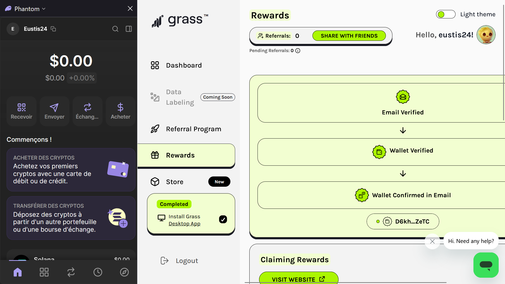

Faites travailler votre bande passante pour vous.

Bonjour, aujourd'hui on vas parler d'un projet sérieux et cool, Grass.
Avez-vous déjà imaginé que votre bande passante inutilisée pourrait générer des revenus pour vous ? Oui, vous avez bien lu. C'est comme si vous louiez votre appartement vide pendant que vous êtes en vacances.
Il existe un projet innovant nommé "Grass" qui exploite cette idée. Ce concept existe déja mais sans récompenses. Il se situe à la croisée des chemins entre l'IA et le DPIN. En d'autres termes, il transforme votre bande passante inutilisée en un service numérique précieux pour l'IA.
Grass loue votre bande passante à des modèles d'IA pour recueillir des informations sur le web public. Ces informations sont ensuite utilisées pour entraîner des modèles de langage. C'est comme si vous aviez un jardin plein de fruits que vous ne pouviez pas tous manger, alors vous les vendez à un fabricant de jus de fruits.
En devenant un nœud du réseau Grass, vous pouvez gagner des points et être récompensé par des AirDrops. Pour vous donner une idée de l'ampleur de ces récompenses, lors du premier AirDrop de la phase 1 en octobre dernier, 100 millions de tokens ont été distribués. Cela équivaut à près de 300 millions de dollars !

Avant d'aller plus loin petit Disclaimer : Cet article est à titre informatif uniquement et ne constitue pas un conseil financier. La participation au projet Grass et l'utilisation de votre bande passante impliquent des risques techniques et financiers. Veillez à protéger vos données personnelles (seed phrase) et à évaluer si cette opportunité est adaptée à votre situation. Les résultats passés ne garantissent pas les performances futures. Merci
Une deuxième saison a été annoncée, avec un nouvel AirDrop à venir. Le moment précis reste inconnu, mais il n'est pas trop tard pour en profiter et générer un revenu complètement passif.
En sachant que le token n'est pas encore lister sur Binance ou d'autre gros exchange, donc on peut s'attendre à une belle monté lorsque cela sera fait, et dans tout les cas, récupérer des token pendant la première moitié de ce bullrun est bon à prendre. Perso je prends le pari.
Pour participer, il suffit de s'inscrire, de télécharger l'application et de rester connecté à Internet.
- 1 ✅ Vous Télechargé et connecté votre wallet "Phantom *
- 2 ✅ Télécharger Grass
- 3 ✅ Vous suivez les étapes sur Grass pour connecter votre wallet
- 4 ✅ Vous récupérez des token "Grass"
* Pensez à concerver votre seed phrase à l'abri 🔐

Conseil logique, si vous utilisez beaucoup de votre bande passante ( jeu ultra gourmand ou logiciel 3D style Bender ) ou tout simlement que votre PC rame, cela n'est pas pour vous. Pour les autres, une fois que vous aurez suffisement de token de Grass Foundation, pensez à les staker. Je vous souhaite de bon gain.
Alors, êtes-vous prêt à faire travailler votre bande passante pour vous ?